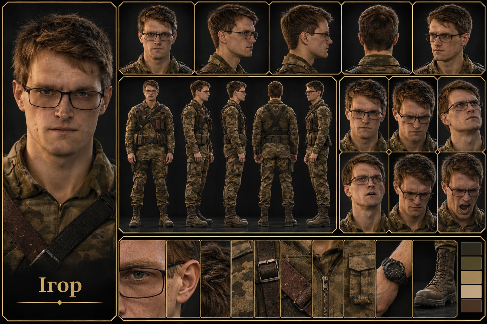

PROFILE
Soldier and Kharakternyk
Ihor operates at the front as a Kharakternyk. In combat, he combines military training, careful observation of the terrain and the ability to open short-range portals. His thought-link transmits his coordinates and condition and lets him receive information from reconnaissance drones.
Name: Ihor
Status: Ukrainian soldier and Kharakternyk
Specialisation: combat operations and tactical observation
Ability: opening short-range portals
Equipment: thought-link bracelet and combat gear
Age and height: not specified in the reviewed passages
THE SNIPER HUNT
The Grey Zone
During his confrontation with the Sniper, Ihor spends two weeks studying the unseen opponent’s behaviour. He changes positions through short-range portals, analyses shot directions and tries to locate the shooter. The Sniper gradually narrows Ihor’s available choices and eventually steers his route towards a prepared final shot.
After Ihor is fatally wounded, a beacon linked to his thought-link automatically transmits his coordinates and condition. The text states that he can be restored if his brain has not been damaged.
COMBAT OPERATIONS
Reconnaissance and a Unit Rescue
In another operation, Ihor works with three experienced assault soldiers. The group locates enemy drone-operator positions, attacks communications nodes and relay equipment simultaneously, and captures some operators alive. Disabling the network weakens drone attacks and artillery targeting, allowing the main Kharakternyk forces to evacuate an encircled company.
Ihor does not consider the operation a final victory. In his view, it has only bought time, as other sections of the front still lack this kind of support.